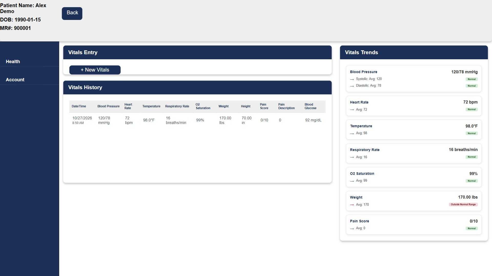
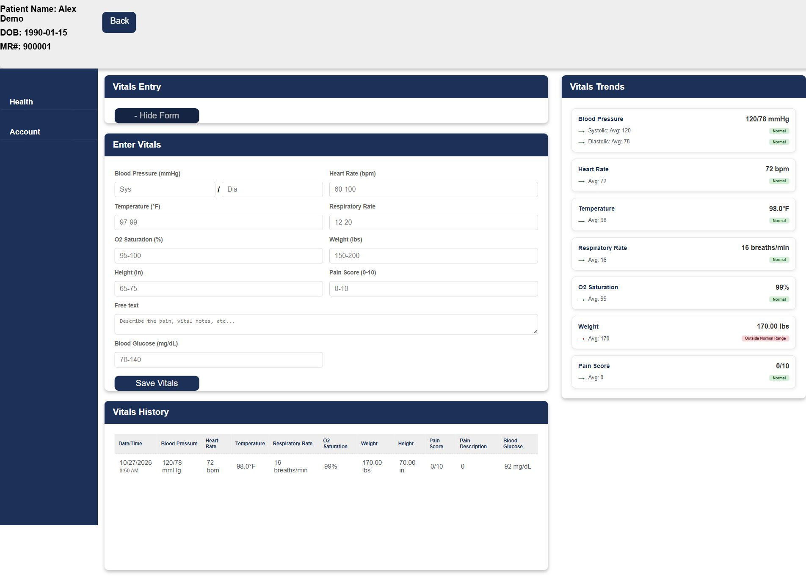
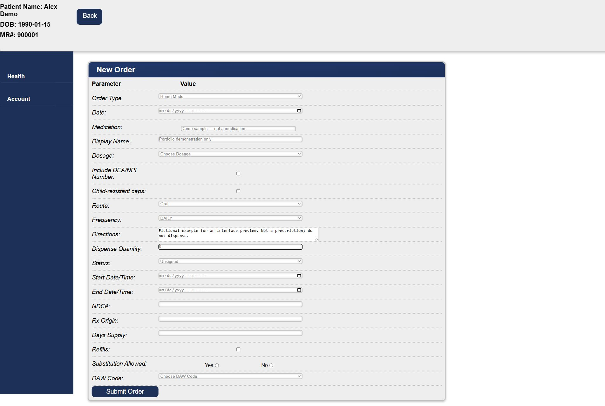

EHR system
An electronic health record application with screens for patient records, vitals, orders, alerts, prevention, and medications.
A closer look at the application.
I built this electronic health record app at the Davis Catalyst Center using PHP and SQL. The project brings patient information, vital signs, and order-entry screens into one web application.
This walkthrough uses Alex Demo, a fictional patient created for this portfolio. All names and medical details shown are sample data.

Follow the chart from entry to overview.
Explore the screens below to see how the application organizes information and captures structured records.
Recording and reviewing vital signs
The vitals screen combines a timestamped history with summary panels for blood pressure, heart rate, temperature, and other measurements. Saving an entry also updates the recent vitals on the patient overview.




Exploring the order-entry form
The order form groups medication information, route, frequency, directions, dates, and status in one workflow. It uses selections for structured values and text fields for descriptive information.


Built with PHP and SQL.
The project combines a PHP web application with SQL-backed data. It was built as part of my work at Catalyst.
This preview shows the current prototype, including its sample dashboard panels. It demonstrates the interface and saved-vitals workflow rather than a finished clinical product.